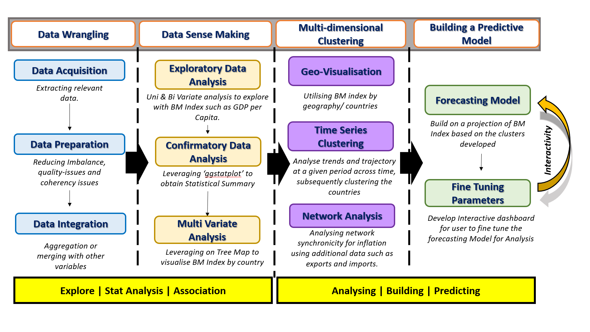

Project Proposal

THE BIG MAC INDEX 🍔
The Big Mac Index (BMI) was invented by The Economist in 1986 as a light-hearted guide to whether currencies are at their “correct” level. It is based on the theory of purchasing-power parity (PPP), with the notion that in the long run, exchange rates should move towards the rate that would equalise the prices of an identical basket of goods and services (in this case, a burger) in any two countries. The BMI has become a global standard, included in several economic textbooks and the subject of dozens of academic studies.
According to Visual Capitalist, “given that McDonald’s is one of the biggest companies in the world and the Big Mac is widely available globally, it means that the famous burger can be used as a basic goods comparison between most countries”. Thus, the BMI can be used to show inflation in burger prices across countries over time when compared in the same currency.
As seen in the visualisation below, there is constant movement in the prices of the Big Mac amongst countries. In some years, Switzerland is the most expensive while Venezuela has taken the top spot due to its hyperinflation problems. Thus, we would like to visually examine the phenomenon of inflation co-movement by looking at the similarities in inflation prices between countries through time, isolate groups with similar characteristics, and determine if the BMI is a suitable proxy to inflation prices.

PROBLEM STATEMENT 💫
There is a significant gap in making complex economic data accessible to the general public and providing advanced analysis tools for professionals. Existing visualization tools, including government dashboards, often fail to cater effectively to both audiences. To address this, we propose an R Shiny-based interactive tool that leverages publicly available data, the Big Mac Index to simplify the understanding of global financial trends for laypersons while offering in-depth data exploration and modelling capabilities for analysts.
LITERATURE REVIEW 📖
According to Tiwari, Abakah, Gil-Alana, & Abakah (2021), co-movement of inflation is mainly fuelled by the fact that “real economic activity is also correlated across countries… As a result, domestic inflation responds to correlated changes in the domestic demand, hence, co-movement in the business cycles could lead to commonality in inflation”. While inflation is commonly measured by Consumer Price Index (CPI), there is not much research conducted on conducting a visual analysis on CPI and inflation. However, our data of BMI share similar characteristics to GDP, other global indices such as the Good Country Index, and socioeconomic indicators from sources such as the World Bank – all these data are spatial-temporal multidimensional data. As pointed out by Priselac (2021), the three main issues of spatial-temporal data is
1) “the continuous and discrete changes in spatial and non–spatial properties of spatial time object”,
2) “the influence of collocated neighboring spatial time objects on each other”, and
3) “space is two-dimensional and can move in an unlimited direction, while time can only move forward, i.e., it is one–dimensional”.
Some proposed methods are as follow:
| Type of data | Visual Analytics Methods | Authors |
|---|---|---|
Good Country Index, Social Progress Index, Global Innovation Index, Global Creativity Index, Social Progress Index, Human Development index etc. |
|
Tan & Dramowicz (2016) |
| GDP data |
|
Zhou, et al. (2017) |
| Traffic data |
|
Dhont, Tsiporkova, Tourwé, & González-Deleito (2020) |
| GDP, inflation rate, employment rate, Gini index etc. |
|
Priselac (2021) |
| World Bank Open data |
|
Soćko (2023) |
We also acknowledge the impact of imports and exports on inflation co-movement – according to Ho, Sarte, & Schwartzman (2023), “even without global shocks, the trade network alone is sufficient to generate substantial comovement in output growth and inflation”. Such data that traces the economic exchanges between countries are often analysed with network analysis.
Some proposed methods are as follow:
| Type of data | Visual Analytics Methods | Authors |
|---|---|---|
| Export data |
|
Gönçer-Demiral & İnce-Yenilmez (2022) |
| Global trade network data (import and export) |
|
Setayesh, Zadeh, & Bahrak (2022) |
As such, given our data is of a spatial-temporal network nature, of particular interest is the article by Wang, et al. (2019) that studied how to visually analyse the relationship between global trade networks and regional instability. They created an “an integration of space, time, and network analysis methods to support the linked analysis of trade network data and conflict events through anomaly detection and correlation analysis across imports, exports and triadic structures” (Wang, et al., 2019).
| Type of data | Visual Analytics Methods | Authors |
|---|---|---|
| Trade data, Stability data (governance indicators), Economic data (GDP, GDP per capita) |
|
Gönçer-Demiral & İnce-Yenilmez (2022) |
PROJECT OBJECTIVES 🎯
The team endeavors to meet three objectives from this project:
a. First objective is to analyse the Purchasing Power Parity (PPP) utilising the Big Mac Index as a proxy gauge for inflation between countries in a light-hearted manner. This will allow users to gain insights on their expenditure power abroad in comparison to their native country. As part of economic indicators, variables such as GDP deflator, GDP per Capita, Consumer Price Index, Imports and Exports, Wages will be used to validate this analysis as a form of univariate and bi-variate analysis.
b. The second objective would be to build a time-series clustering network predictive model in a bid to (1) analyse trends and patterns from a selected time period, (years 2000 – 2023), (2) associate the patterns or countries into clusters based on associations/correlations, and (3) forecast projections of BM Index for the next 5 – 10 years as part of a predictive model.
c. The final objective would be to build an interactive dashboard with interactive means for the user to perform fine-tuning methods to gain insights. This interactivity should allow a degree of autonomy to users such that they can gain from uni, bi, multi-variate analysis and the Network and Time-Series modelling that have been pre-built at the back-end of our application.1.
DATASET 📊
| Data | Source | Description |
|---|---|---|
| Big Mac Index (2000-2023) | The Economist | This dataset includes semi-annual data from 29 countries and regions. It encompasses local prices of Big Macs, their equivalent in USD and other major currencies like the Euro and CNY, along with both the raw and GDP-adjusted Big Mac Index. |
| GDP and Related Metrics (2000-2022) | The World Bank | Annual data covering GDP, GDP per Capita, and inflation rates. This dataset provides an economic context for the countries included in the Big Mac Index. |
| World Export & Import Dataset (1989 - 2023) | Kaggle | Annual data covering various aspects of trade, including trade values, tariff rates, and trade policy indicators for numerous countries over multiple years. |
| Currency Exchange Rates (From 2000) | OECD | Exchange rates to USD, complement the Big Mac Index data by offering additional insights into currency valuation trends over time. |
The combination of these datasets provides a comprehensive view of economic indicators, currency valuations, and purchasing power across different regions, enhancing the analytical depth of our project.
LIMITATIONS ⚙️
The team was cognisant of the limitations of the dataset and project. Three limitations were identified:
Consistency of Data Set
One of the limitations of using Big Mac Index is in its consistency of valuation within a country. The index price inconsistency can be found within the different sub-regions and estates within the countries. To this end, the team will utilise appropriate statistical aggregation as the most appropriate representation of the BM Index of the selected country.
Granularity of Data
The next limitation of using the Big Mac Index would be its granularity The prices of sub-ingredients within the Big Mac such as flour, sugar, meat, lettuce and etc, would impact the overall Big Mac Index. The team will be doing a closer study on how this granularity and whether it is significant to stray a coherent analysis.
Effects of Fiscal Policies
Big Mac Prices Valuation would be artificially affected due to fiscal policies that the countries’ governments introduced to suppress the effects of inflation, hence getting an undervalued Big Mac Index.
ANALYSIS TASKS 📍
This is a list of analytical tasks for our visual analysis of BMI (adapted from Zhou, et al., 2017).
Spatial visualisation
We are interested in providing global and local views to show the levels of inflation for different countries in the world. We foresee the following challenges of 1) how can we measure the similarities between different countries with different dimensional features, 2) how can we present the spatial clusters with similar inflation trajectories, 3) how can we present the different spatial clusters, and 4) how can we present a comparative view of inflation trajectories of say two countries of interest?
Temporal visualisation
We want to show the trajectory of inflation over time in different countries. We foresee the following challenges of 1) how to have a deeper exploration of trajectories of the spatial clusters of interest, 2) how to track consistent spatial clusters across time intervals, 3) how to quantify these changes of spatial clusters over time, and 4) how to identify changing clusters with similar dimensional features over time?
Network visualisation
We want to show the directionality and weight of the trade amongst different countries. We foresee the following challenges of 1) how to investigate the different trade measures of a country of interest, 2) the possible influence between countries on their trade network, and 3), how do we group similar countries based on their trade trajectories and compare their trade networks?
Spatial-temporal multidimensional network visualisation
We want to integrate the spatial, temporal and network information seamlessly throughout the different visualisations we use. We foresee the challenges of 1) how do we allow quick reference to spatial clusters, 2) how do we showcase the temporal inflation trajectories of spatial clusters of interest, 3) how do we explore other spatial clusters that exhibit similar temporal and network dynamics that indicate inflation?
METHODOLOGY 🔍
 Our analytical approach will encompass a structured and iterative data analysis and predictive modeling process, integrating various R libraries to handle specific tasks:
Data Wrangling
- Leveraging R libraries such as `dplyr` for data manipulation and `tidyr` for data tidying, we will extract, clean, and preprocess data from diverse sources, ensuring data quality and consistency. Feature engineering will be conducted to enhance model input.
Data Sense Making
Exploratory Data Analysis (EDA): Using `ggplot2` for data visualization, we will conduct univariate and bivariate analyses to uncover patterns and relationships within the Big Mac Index and economic indicators like GDP per capita.
Confirmatory Data Analysis (CDA): With `ggstatsplot`, we will perform statistical tests to validate our initial EDA findings, seeking to establish confidence in the observed trends.
Multivariate Analysis: Advanced visualization techniques, possibly utilizing `treemap` or `plotly`, will help us depict the multi-faceted relationships in our dataset.
Multi-Dimensional Time Series Clustering
Geo-visualisation and analysis: Spatial data patterns will be explored using packages such as `sf` and `ggmap` to incorporate geographical context into the Big Mac Index analysis.
Time Series Clustering: The `tsclust` package will enable the identification of similar trajectories among countries’ economic indicators over time, inform the clustering of countries based on these time-dependent patterns.
Network analysis: Trade relationship patterns between countries will be explored using packages such as ‘visNetwork’ to provide a network analysis to understanding the impact on trade on BMI.
Building a Predictive Model
Forecasting Model: We will apply time series forecasting techniques, utilizing packages like `forecast` and `prophet`, to predict future Big Mac Index values.
Fine Tuning Parameters: Our interactive dashboard, constructed using `shiny`, will allow users to adjust model parameters dynamically, enhancing the model’s applicability to various analytical scenarios
R SHINY APP 💻
As a casual user, I want to be able to select a country on the map so that I can see the inflation trajectory of my country of interest.
As a casual user, I want to see how my country of interest is connected via trade to other countries.
As a casual user, I want to be able to compare my country of interest with another country of interest and compare their inflation trajectory.
As a casual user, I want to examine a year of interest so that I can see the values of all relevant dimensional features.
As a causal user, I want to see how the inflation trajectory changes through the years amongst countries.
As a casual user, I want to identify which countries would suffer from the next inflation.
As an expert user, I want to be able to zoom into countries with similar inflation trajectories as my country of interest and study what are their similarities and differences in other features.
As an expert user, I want to be able to interact with any chart and have a detailed exploration of that chart.
As an expert user, I want to tweak the parameters of the models used and compare the results.
As an expert user, I want to compare the trade networks involved in countries of similar inflation trajectories.
Therefore, in response to the need for accessible and nuanced social-economic analysis tools, the R Shiny app demystifies complex financial data for the public while offering robust functionality for experts. Our app will utilise the Big Mac Index and other economic datasets to present a user-friendly interface with powerful analytical capabilities.
The tool will feature intuitive visualisation options to make complex data comprehensible, alongside advanced functionalities for data visualization, modelling, and hypothesis testing. Users will be able to adjust parameters, explore different modelling scenarios, and derive additional insights that go beyond the standard analyses provided by existing government dashboards. The ultimate goal is to enhance public understanding of global financial and social indicators while offering a sophisticated analysis platform for professional use.
Key Features
Dynamic Univariate Analysis: Users will be able to engage with interactive visualizations like histograms and boxplots to analyze single variables, such as local Big Mac prices, adjusting for inflation, GDP, and evaluating statistical significance.
Comparative Bivariate Analysis: The app will feature tools to create scatter plots and correlation matrices, allowing a deep dive into the relationships between pairs of variables like the Big Mac Index and GDP, with functionality to control for economic factors.
In-depth Multivariate Analysis: Utilizing treemaps and other multivariate visualization techniques, users can dissect complex relationships by grouping data based on selectable parameters across chosen timeframes.
Geo-Spatial Visualization: Interactive thematic maps will showcase the geographical distribution of the Big Mac Index and other indicators, providing visual insights into global economic diversity and purchasing power.
Network Visualization: Interactive thematic maps will showcase the trade connections and its magnitude between countries. The map can show the trade dependency of the selected country to other countries. This can be toggled between import and export.
Time-Series Analysis and Clustering: Customizable line graphs will depict the evolution of the Big Mac Index, with clustering features to categorize countries with similar economic trajectories, all based on user-defined criteria.
Predictive Forecasting: Incorporating time-series forecasting, our app will allow users to project the Big Mac Index and associated economic measures into the future, informed by past and present trends.
Additional features
Customizable EDA and CDA Tools: Users will have the flexibility to change arguments in R directly through the interface, allowing them to choose different statistical tests and measures for Exploratory Data Analysis (EDA) and Confirmatory Data Analysis (CDA), thereby enabling diverse hypothesis testing and validation approaches.
Interactive Data Selection: A flexible data selection feature will enable users to curate the dataset by choosing specific countries, time periods, and economic metrics, such as GDP and inflation rates
Parameter Tuning Interface: Through sliders, input boxes, and dropdown menus, users will have the agency to fine-tune model parameters, engaging directly with the forecasting and clustering analyses.
SCOPE OF WORK ⭐
Our project execution will be a collaborative effort with each team member contributing to various phases. To ensure adherence to our timeline and resolution of any disagreements, specific members will take the lead on different phases
| Phase | Task | Description | Assignment | Lead |
|---|---|---|---|---|
1 Week 6 |
Data Wrangling | Prepare data for further analysis | All team members will simultaneously review the datasets. Discussions will finalize the datasets for analysis. | |
2 Weeks 7-8 |
Exploratory Data Analysis (EDA) & Confirmatory Data Analysis (CDA) | Conducted concurrently to inform potential visualizations and interactive elements for the R Shiny dashboard | Univariate Analysis: Jiayi Bivariate Analysis: Vic Multivariate Analysis: Firdaus |
Jiayi |
3 Weeks 8-9 |
Data Modelling | Focused on clustering and model exploration to determine dashboard parameters | Time Series Clustering: Jiayi Forecasting Model Development: Firdaus Network Analysis: Vic |
Vic |
4 Weeks 9-10 |
Dashboard Development | Dashboard deployment | Each member will implement their respective components as designed in earlier phases. Firdaus will be in charge of developing and ensuring the framework and consistency of the dashboard. | Firdaus |
REFERENCE 🔖
Dhont, M., Tsiporkova, E., Tourwé, T., & González-Deleito, N. (2020). Visual Analytics for Extracting Trends from Spatio-temporal Data. Advanced Analytics and Learning on Temporal Data, (pp. 122-137).
Gönçer-Demiral, D., & İnce-Yenilmez, M. (2022). Network analysis of international export pattern. Social Network Analysis and Mining.
Ho, P., Sarte, P.-D. G., & Schwartzman, F. F. (January, 2023). How Does Trade Impact the Way GDP Growth and Inflation Comove Across Countries? Retrieved from Federal Reserve Bank of Richmond: https://www.richmondfed.org/publications/research/economic_brief/2023/eb_23-01#:~:text=23%2D01-,How%20Does%20Trade%20Impact%20the%20Way,and%20Inflation%20Comove%20Across%20Countries%3F&text=Seemingly%20small%20international%20trade%20linkages,growth%20and
Priselac, M. (12 October, 2021). Visual Analytics of Spatial Time. Retrieved from TU Wien Informatics: https://www.academia.edu/download/97273014/Priselac2021-Master_20Thesis.pdf
Setayesh, A., Zadeh, Z. S., & Bahrak, B. (2022). Analysis of the global trade network using exponential random graph models. Applied Network Science.
Soćko, K. (19 June, 2023). Clustering Countries Based on Multidimensional Time Series. Retrieved from Medium: https://medium.com/@kamilasocko/clustering-countries-based-on-multidimensional-time-series-66c7c96120d9
Tan, C., & Dramowicz, K. (2016). Geovisualization and analysis of the Good Country Index. IOP Conference Series: Earth and Environmental Science. Halifax.
Tiwari, A. K., Abakah, E. J., Gil-Alana, L. A., & Abakah, M. K. (2021). Inflation Co-Movement Dynamics: A Cross-Country Investigation Using a Continuous Wavelet Approach. MDPI, 613.
Wang, H., Lu, Y., Shutters, S. T., Steptoe, M., Wang, F., Landis, S., & Maciejewski, R. (2019). A Visual Analytics Framework for Spatiotemporal Trade Network Analysis. IEEE TRANSACTIONS ON VISUALIZATION AND COMPUTER GRAPHICS, 331-341.
Zhou, Z., Li, H., Liu, F., Liu, Y., Huang, C., Tao, Y., . . . Su, W. (2017). Visual analytics of economic features for multivariate spatio-temporal GDP data. Journal of Visualization, 337-350.